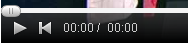
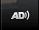
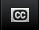
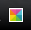
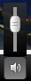

To play/pause the player use the play button or the space bar. To fast forward or rewind use the scrub bar or the left and right arrow keys.
When playing a YouTube video you can scrub past the buffered video using the scrub bar or shortcut keys.

If an audio description is available it can be accessed via the audio description button on the video toolbar.

If captions are available for the video you are watching, there will be a caption button on the video toolbar.

You can control the text size and the font and background colour of the captions by using the caption text size and caption colour settings buttons.

You can mute/unmute the sound with the volume button or the M key. To adjust the volume use the volume slider or the up and down arrow keys (cursor keys).
For keyboard users, the following keys control the video player.
Space bar - Play/pause.
Left arrow - Rewind.
Right arrow - Fast forward.
Up arrow - Increase volume.
Down arrow - Decrease volume.
M, Mute.
For screen reader users, the following keys control the video player.
CTRL + ALT + 1 - Play/pause.
CTRL + ALT + 2 - Rewind.
CTRL + ALT + 3 - Fast forward.
CTRL + ALT + 4 - Increase volume.
CTRL + ALT + 5 - Decrease volume.
CTRL + ALT + 6 - Mute.
All shortcut keys are listed in the information panel in the video player.

You can watch the video in full screen mode. To exit full screen mode you can either press the Full screen button again or press the Escape key. Please note, no other keyboard controls will work in Full screen mode.
The video player is fully accessible to screen reader and keyboard users. All buttons are accessible using the Tab, Enter or shortcut keys. All controls are labelled for screen readers.
Back to player